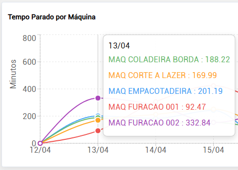
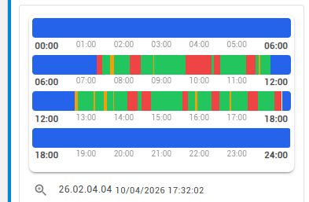
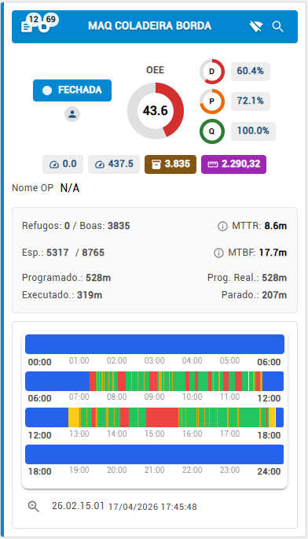
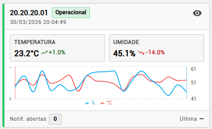

Ecossistema de Sensores MESTTI
Tecnologia de ponta para digitalização completa do chão de fábrica.
Sensor de Contagem de Peças
Contagem automática e confiável para linhas de produção em alta cadência.
O Sensor de Contagem de Peças da MESTTI foi desenvolvido para monitorar a produção em tempo
real com alta precisão.
Integrado ao sistema, ele registra cada peça produzida automaticamente e envia os dados
instantaneamente para o dashboard,
eliminando apontamentos manuais e reduzindo falhas operacionais.
Ideal para empresas que precisam de maior controle produtivo, rastreabilidade e visibilidade
imediata do desempenho da linha.
Benefícios em destaque
- Contagem automática em tempo real
- Redução de erros de apontamento manual
- Maior controle da produção por máquina ou posto
- Integração com dashboard e indicadores
- Aplicável em diferentes tipos de processo e mecanismo
Aplicações
- Esteiras
- Linhas de montagem
- Máquinas automáticas e semiautomáticas
- Processos com peças unitárias ou repetitivas
- Operações que exigem monitoramento contínuo da produção
| Modo de detecção | Infravermelho, Indutivo, Laser ou Mecânico |
|---|---|
| Conectividade | Wi-Fi 2.4 GHz |
| Alimentação | Bivolt automático (110/220V) |
| Integração | Dashboard MESTTI em tempo real |
| Instalação | Adaptável a diferentes máquinas e mecanismos |
Sensor de Status da Máquina
A base para um OEE confiável e dados automáticos.

Este sensor realiza a leitura contínua da corrente elétrica da máquina para identificar automaticamente estados como operação, parada e setup, eliminando apontamentos manuais e aumentando drasticamente a confiabilidade dos dados para o cálculo do OEE.
| Método de Leitura | Corrente elétrica não invasiva |
|---|---|
| Faixa de Corrente | 0 a 100 A (ajustável) |
| Instalação | Rápida, em menos de 3 minutos, pela própria equipe |
| Proteção | IP65, resistente a ambientes industriais |
Sensor de Contagem com Metro Linear
Pensado para indústrias de extrusão e moveleiro, o sensor faz contagem automática 24/7 do comprimento produzido, em centímetros, com alta confiabilidade.
| Tipo de Medição | Encoder de Alta Resolução |
|---|---|
| Precisão | ± 1,5cm |
| Unidade de Medida | Centímetros (cm) |
| Interface | Display Local + Nuvem MESTTI |


Sensor de Temperatura e Umidade
Monitoramento ambiental e contagem automática 24/7 de variações para garantir a qualidade de produtos sensíveis. Atende rigorosamente aos requisitos de órgãos reguladores como ANVISA e MAPA.
| Range Temp. | -40°C a +85°C (± 0.3°C) |
|---|---|
| Range Umidade | 0 a 100% UR (± 2%) |
| Bateria | Até 3 anos de duração |
| Alertas | SMS, E-mail e WhatsApp em tempo real |